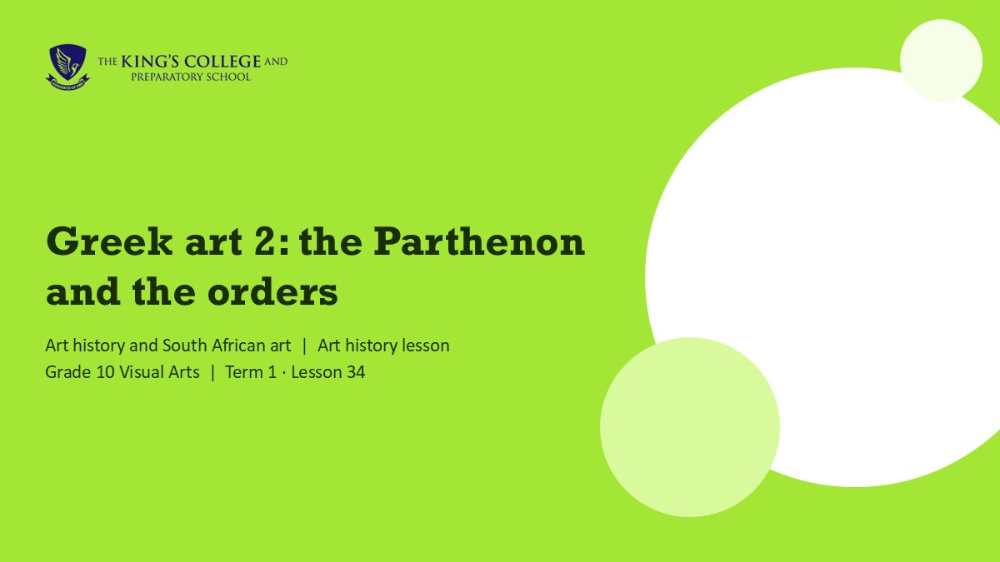

Term 1 · Lesson 34 · Art history lesson
Greek Art 2: The Parthenon and the Orders
Start Here
Today I Will
- Explain how the Parthenon uses proportion and optical refinements
- Identify the Doric, Ionic and Corinthian orders
- Find the Classical orders in a building near me
Think first
Why do so many banks, courts and government buildings, even in Johannesburg, have columns on the front?
Words to Know
| Word | Meaning |
|---|---|
| Column | An upright pillar that holds up the roof or the entablature. |
| Doric | The plainest Greek order: a thick fluted column with no base and a cushion-shaped capital. |
| Ionic | A slender order on a base, with scroll-shaped volutes on the capital. |
| Corinthian | The richest order: a slender column on a base with acanthus leaves on the capital. |
| Entablature | The horizontal part above the columns: architrave, frieze and cornice. |
| Pediment | The triangular gable at each end of a temple, often filled with sculpture. |
Slides

Videos
Notes
The Parthenon, proportion and optical refinements; the Doric, Ionic and Corinthian orders.
The Parthenon (447–432 BCE)
- Who and why: A temple to Athena on the Acropolis, built under Pericles. Architects Iktinos and Kallikrates; Phidias directed the sculpture.
- Power: Partly paid for with money from Athens's allies, so it was also a statement of Athenian power and pride.
- Proportion: The building is based on carefully chosen ratios, so the parts relate to each other and to the whole.
- Optical refinements: The floor curves up in the middle, columns lean slightly inwards and swell a little (entasis), so it looks straight and alive.
- Sculpture: Pediment groups, metopes showing battles and a long frieze of a procession, all once brightly painted.
The Three Orders
| Column and capital | Character |
|---|---|
| Doric: thick fluted column, no base, plain cushion-shaped capital | Strong, simple and sturdy (the Parthenon) |
| Ionic: slender column on a base, capital with scroll-shaped volutes | Elegant and lighter (the Erechtheion) |
| Corinthian: slender column on a base, capital with acanthus leaves | Richest and most decorative; popular with the Romans |
Remember
Doric is strong, Ionic is elegant, Corinthian is rich: and the Parthenon only looks straight because it is not.
Practical
You need: History booklet, visual journal, pencil, ruler
Draw and Label the Orders; Find Them in Johannesburg
- Draw the three orders side by side in your VJ, from base to entablature.
- Label the column, capital, base (where there is one), entablature and pediment.
- Analyse the Parthenon with the FET formula for balance and rhythm: identify, describe, effect.
- Think of a building in Johannesburg with columns, such as a bank, court, church, school or museum.
- Name the building and say which order it uses and how you can tell. Add a photo or sketch by next lesson.
Test Yourself
- Identify the order used on the Parthenon.
- Explain what entasis is and why the Greeks used it.
- How can you tell an Ionic capital from a Corinthian capital?
Show answers
1. Doric. 2. Entasis is the slight swelling in the middle of a column; it corrects the optical illusion that straight columns look thinner in the middle, so they look strong and straight. 3. An Ionic capital has scroll-shaped volutes; a Corinthian capital is decorated with acanthus leaves.
Finished Early?
Capital quick-draw
Test your memory of the three orders.
- Without looking, draw the Doric, Ionic and Corinthian capitals side by side in your VJ.
- Check them against the History booklet and correct any mistakes in a different colour.
- Label the volutes and the acanthus leaves.
- Star the order used on the Parthenon and write one word for the character of each order.